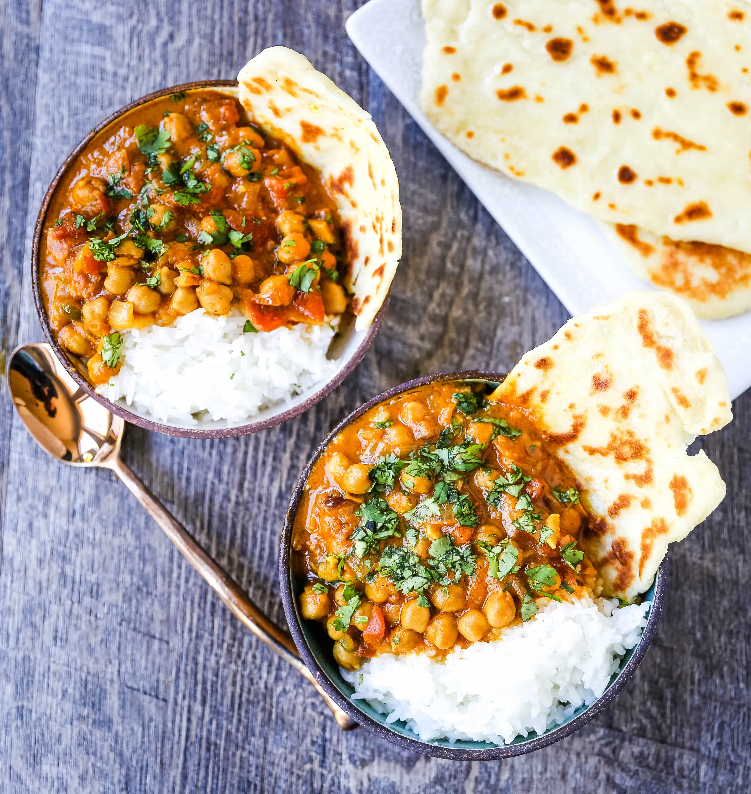

Chickpea Coconut Curry (Vegan)

A rich, vegan coconut curry, creamy and flavourful.
Ingredients
- 400g chickpeas, drained & rinsed
- 2 tablespoons coconut oil
- 1 medium red onion or yellow onion, diced
- 3 garlic cloves, minced
- 1 ½ tablespoons garam masala - I use this one
- 1 teaspoon curry powder
- 1 lime, juiced
- 1/4 teaspoon cumin
- 383g coconut milk
- 400g fresh or canned tomatoes
- sea salt & ground black pepper, to taste
Cooking instructions
- In a deep pot over medium-high heat, add the coconut oil.
- Add in the onions and tomatoes. Grind some sea salt and ground black pepper over the mixture and stir together. Lower heat to medium and allow to cook down until juices of the tomatoes are naturally released and onions are soft, about 10 minutes.
- Add in the chickpeas, garlic, garam masala, curry powder and cumin. Stir to combine.
- Add in the coconut milk and stir again. Add in the coconut flour which helps to slightly thicken the curry. Bring the curry to a boil, and then reduce to medium-low so that the mixture continues to simmer for 10 to 12 more minutes.
- Taste the curry and season with salt and pepper if you desire. Remove the curry from the heat and squeeze a lime lightly over the top of the curry, stirring to combine. Don’t skip this step! Allow to cool slightly and then serve. Enjoy!